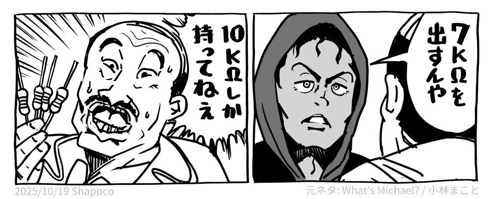

RC Combinator: 合成抵抗探索ツール
2025/10/17 |
記事のソース

E 系列の抵抗を組み合わせて目的の抵抗値に近い合成抵抗のトポロジを得るツールを作ってみました。
RC Combinator: 合成抵抗・合成容量 探索ツール
合成抵抗のほか、合成容量、分圧抵抗値の探索、LED の電流制限抵抗の算出もできるようにしました。
最近だと LLM を使って答えを得ることができますが、数値を入れれば秒で答えが出てくること、「ちゃんと計算して答えを出している」という保証があるのがメリットですかね。
合成抵抗時計
おまけというかジョークとして、時刻を合成抵抗として表示する時計 も作ってみました。
関連リンク
-
リポジトリ
-
SNS 投稿
- X (Twitter): 「RC Combinator」を公開しています
- Misskey.io: 「RC Combinator」を公開しています
- Bluesky: 「RC Combinator」を公開しています
-
カバーイラスト
- X (Twitter): 10kΩ しか持ってねえ
- Misskey.io: 10kΩ しか持ってねえ
- Bluesky: 10kΩ しか持ってねえ